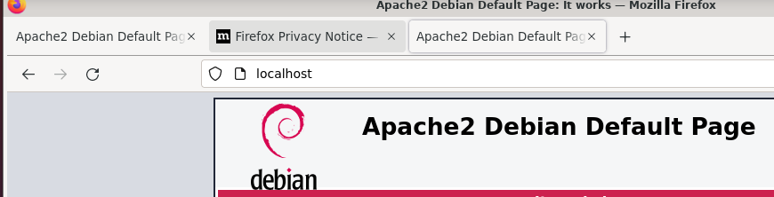
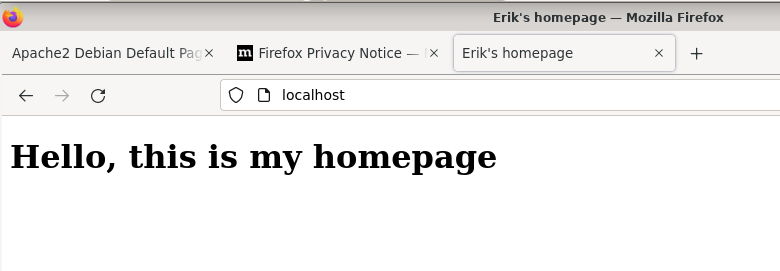

Pvm: 14.3.2022
Tehtävän tarkoitus on tehdä yksinkertainen kotisivun joka pyörii Apachella
Seurasin Tero Karvisen ohjeet joita löysin osoitteesta: https://terokarvinen.com/2016/new-default-website-with-apache2-show-your-homepage-at-top-of-example-com-no-tilde/
Aluksi asensin ja käynnistin Apachen
erik@last:~$ sudo apt-get -y install apache2
erik@last:~$ systemctl start apache2.service
Apachen oletussivu näkyy osoitteessa localhost
Loin kotisivujen .conf tiedoston omalle etusivulle apachen sivuasetuskansioon
erik@last:~$ sudoedit /etc/apache2/sites-available/erik.conf
erik@last:~$ cat /etc/apache2/sites-available/erik.conf
<VirtualHost *:80>
DocumentRoot /home/erik/public_html/
<Directory /home/erik/public_html/>
Require all granted
</Directory>
</VirtualHost>
Deaktivoin apachen oletussivun ja aktivoin oman kotisivuni.
sudo a2ensite erik.conf
sudo a2dissite 000-default.conf
Loin kotisivun
erik@last:~/public_html$ cat index.html
<!DOCTYPE html>
<html lang="en">
<head>
<meta charset="UTF-8">
<meta http-equiv="X-UA-Compatible" content="IE=edge">
<meta name="viewport" content="width=device-width, initial-scale=1.0">
<title>Erik's homepage</title>
</ head >
<body>
<h1>Hello, this is my homepage </ h1 >
< / body >
</ html>
Kuva näkyi nyt osoitteessa localhost
